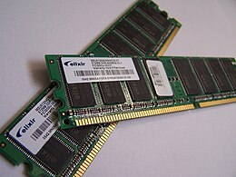
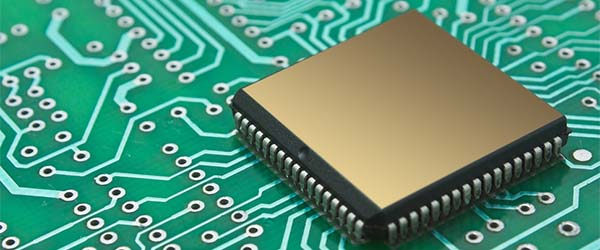

Het geheugen van een computer is de opslagruimte en het werkgeheugen van de computer. Er zijn verschillende soorten geheugen die elk een ander taak hebben. De drie belangrijkste zijn RAM, ROM en permanent geheugen.
RAM is het werkgeheugen van de computer. Dit geheugen wordt gebruikt om tijdelijke gegevens op te slaan die de computer snel nodig heeft om taken uit te voeren. Stel dat je een programma opent, dan worden de gegevens van dat programma in het RAM-geheugen geladen zodat de computer snel kan reageren op je acties. Het RAM geheugen is voor snel gebruik, wat betekent dat de opgeslagen gegevens weer verdwijnen zodra je de computer uitzet of opnieuw opstart.
Hoe meer RAM een computer bezit, hoe sneller en efficiënter de computer meerdere taken tegelijkertijd kan uitvoeren, bijvoorbeeld wanneer je meerdere programma's open hebt staan. Het RAM geheugen zorgt ervoor dat de computer snel kan schakelen tussen deze programma's zonder dat het alng duurt om ze opnieuw te laden.

ROM is een type geheugen dat alleen gelezen kan worden en niet gewist of gewijzigd in het dagelijks gebruik van een computer. Dit geheugen bevat belangrjike instructies die de computer nodig heeft om op t starten, zoals het opstartprogramma. Het vertelt bijvoorbeeld hoe de computer verbinding moet maken met de hardware. ROM is in tegenstelling tot het RAM-geheugen niet vluchting, wat betekent dat de gegevens hierin wel bewaard blijven, zelfs als de computer wordt uitgeschakeld.

Permanent geheugen is het geheugen waarin je alles kan opslaan wat je wilt bewaren, zoals bijvoorbeeld foto's. Dit type geheugen blijft ook bewaard als de computer wordt uitgeschakeld. Dit geheugen is vaak groot en bedoeld voor opslag op lange termijn. Een voorbeeld van permanent geheugen is bijvoorbeeld een harde schijf (HDD's)